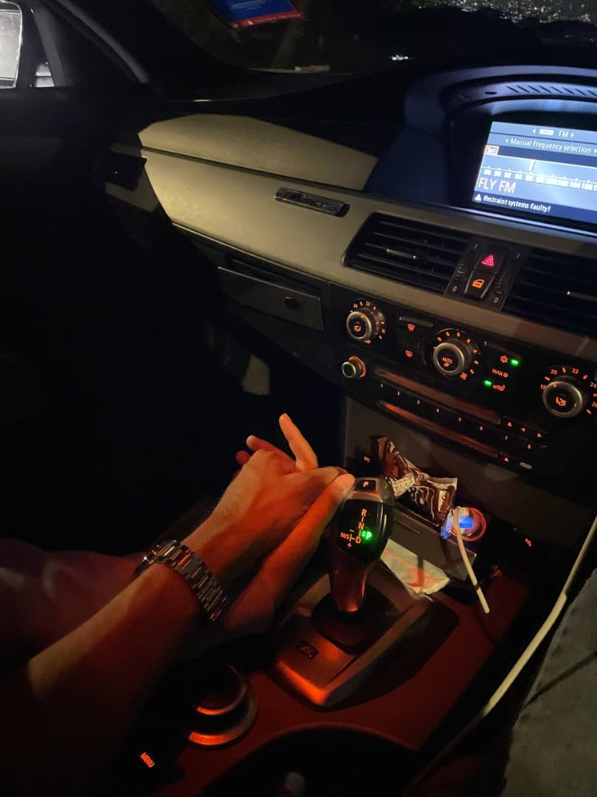

FOR YOU, ALWAYS
This page exists because words can't describe how much you mean to me, so I made you a little something special instead.
A LETTER
I do not always know how to say the things I feel. You know this. You have sat with my silences and somehow understood them anyway, which is one of the many reasons I am convinced you are special.
You make ordinary life feel like something worth paying attention to. A Monday morning with you is better than any grand occasion without you. That is not a small thing. That is everything.
So here it is, in the most permanent way I know how... written down and made real. I love you. Deeply, quietly, loudly, completely. In every version of every day.
— Always yours
MOMENTS
